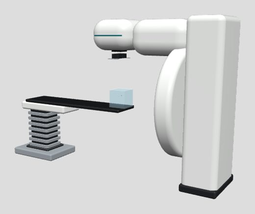
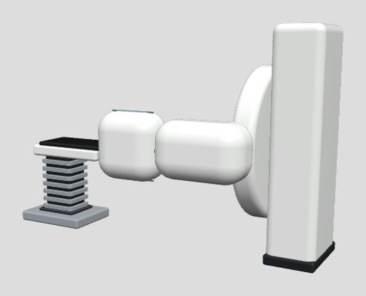
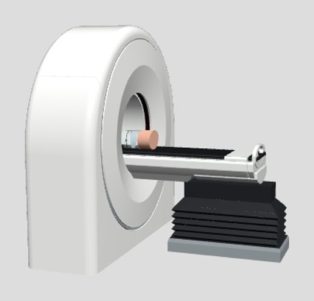
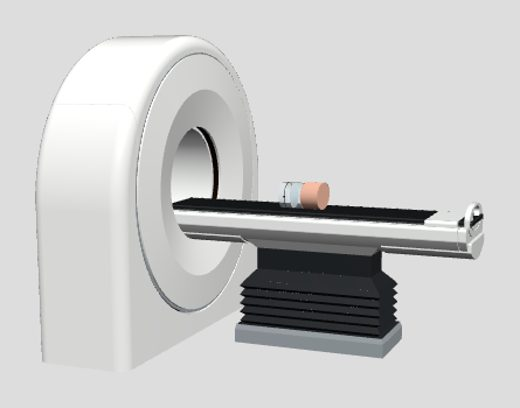

Life-size AR on iPad
Place the CT scanner or the linac in a real room and walk around it at true size. Equipment shown is a teaching model, not a specific vendor’s product.
This page is for iPad and iPhone (Safari). Android users: open the main viewer in Chrome and tap AR.

Linac – gantry 0°Head over the couch. About 4 m long incl. couch.

Linac – gantry 90°Lateral beam position; shows the gantry’s swing radius.

CT – table inCouch advanced into the bore with the phantom.

CT – table outLoading position.
How to use
- Open this page in Safari on an iPad (iPadOS 13 or later; LiDAR is not required).
- Tap a card. The AR viewer opens; slowly move the iPad so it finds the floor.
- Drag to position it, rotate with two fingers, and walk around it. Clear about 5 × 4 m for the linac and 4 × 3 m for the CT.
- Models are locked to life-size (1 unit = 1 m) so people can judge real scale. Use the on-screen share button to take a photo.
Limits
- These are static poses: the gantry, couch and beam cannot be moved in this viewer. Use the interactive 3D viewer for that.
- The treatment room, console, beam and X-ray animations are left out so the equipment itself is easy to see.
- Educational model only; dimensions are representative, not a vendor specification.